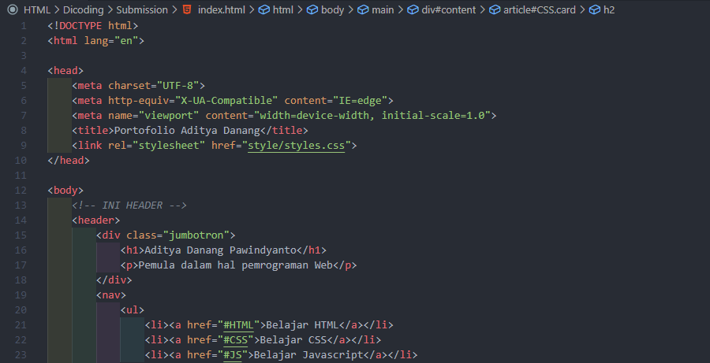
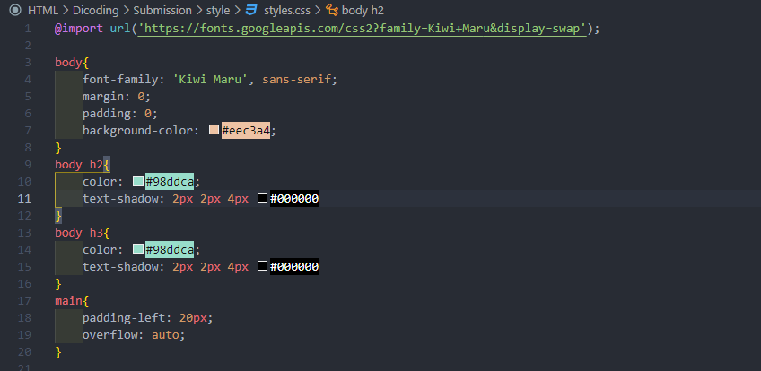
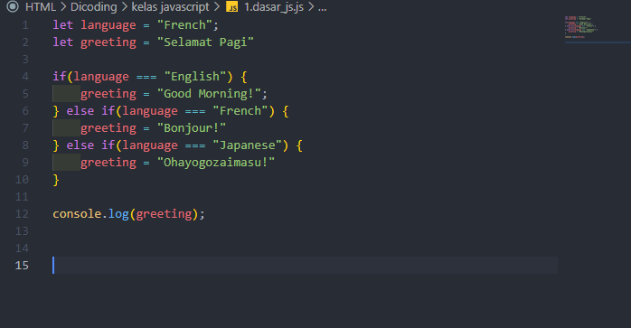
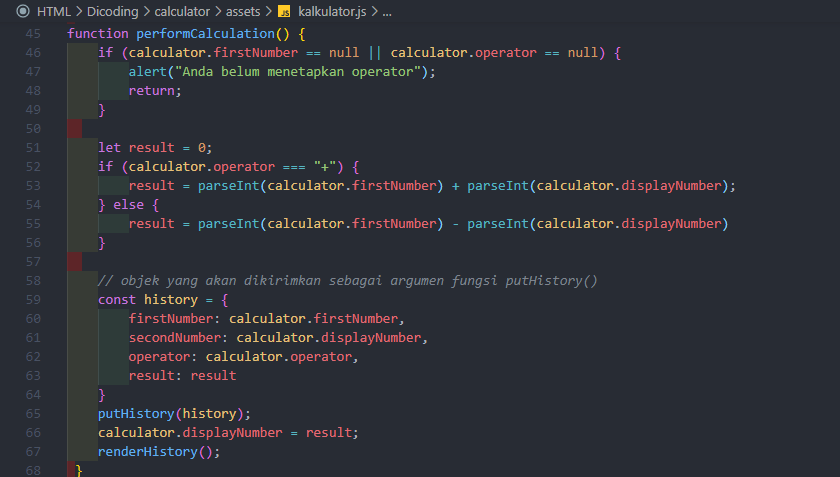

Pengenalan ke HTML
Seperti yang sudah kita ketahui, HTML berperan sebagai struktur untuk membangun sebuah halaman
website. Dan pada sub-modul ini kita akan mencoba menuliskan struktur HTML, siap? Pada akhir
sub-modul, kita akan membuat halaman website seperti gambar berikut:

Untuk langkah awal tentunya kita membuat sebuah berkas HTML. Kita akan mencoba membuatnya dari nol
dengan menggunakan alat yang ada. Gunakanlah text editor usungan sistem operasi masing-masing agar
kita tahu bagaimana pengalaman membuat dan menuliskan sebuah kode tanpa bantuan code completion.
Pengenalan ke CSS
Pada sub-modul pengenalan sudah disinggung seperti apa peran CSS pada website. Website nampak begitu
membosankan dan mengerikan tanpa adanya CSS. Cascading Style Sheet atau biasa disingkat CSS
merupakan W3C standar yang digunakan untuk mengatur visualisasi berkas yang ditulis pada HTML. Pada
sub-modul ini kita akan belajar penggunaan dasar dari CSS. Tepatnya mulai dari pembuatan berkas CSS,
pengenalan struktur sintaksnya, hingga menerapkan dasar styling seperti memberikan warna pada sebuah
teks.

CSS syntax berbeda dengan HTML, begitu pula dengan JavaScript. CSS bukanlah sebuah bahasa pemrograman
karena di dalamnya tidak terdapat logika, tidak dapat membuat sebuah variabel, tidak adanya proses
iterasi, dsb. CSS hanya sebuah declarative language yang digunakan untuk mendeklarasikan suatu nilai
yang nantinya digunakan untuk mengatur seperti apa sebuah elemen HTML ditampilkan pada browser.
Pengenalan Javascript dan DOM
Pada sub-modul ini kita akan banyak berkenalan dengan JavaScript. Berbeda dengan HTML dan CSS,
sekarang kita berada di wilayah pemrograman yang benar-benar memanfaatkan logic dalam penulisan
kodenya. Pengembangan website tidak hanya mengandalkan seni untuk membangun tampilan yang cantik,
melainkan juga memerlukan bahasa pemrograman agar meningkatkan fungsionalitas dan membuat website
lebih interaktif.
Dasar Javascript

Wajar jika kita menemukan banyak buku JavaScript dengan halaman super tebal karena memang banyak
sekali bahasan seputar JavaScript ini. Tetapi pada materi ini kita rangkum menjadi beberapa
pembahasan penting yang Anda perlu ketahui. Tujuannya agar Anda familier dengan dasar - dasar
JavaScript. Dengan memahami dasar-dasar JavaScript, nantinya diharapkan kita dapat terus
berlatih sehingga terbiasa dengan penggunaan sintaksnya.
DOM

Sebelumnya disebutkan DOM Scripting, tapi sebenarnya apa itu DOM? Document Object Model (DOM)
memberikan kita jalan untuk mengakses dan memanipulasi konten pada dokumen. DOM merupakan
application programming interface (API) untuk HTML, XML atau SVG. Dengan DOM berkas HTML dapat
direpresentasikan dalam bentuk objek yang dapat diakses oleh JavaScript (sebenarnya tidak hanya
oleh JavaScript. DOM juga dapat diakses oleh bahasa pemrograman lain). Melalui DOM inilah
JavaScript dapat memanipulasi elemen beserta atributnya pada HTML.